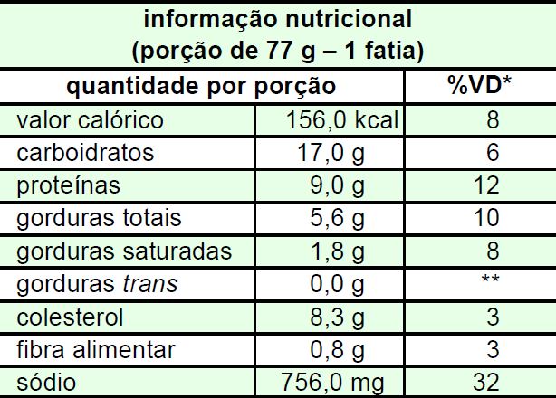

Descrição: pizza de calabresa,
muçarela e champignon, 460 g.
Ingredientes: farinha de trigo
enriquecida com ferro e ácido fólico,
calabresa, queijo muçarela, polpa de
tomate, champignon, azeitonas
pretas, gordura vegetal hidrogenada,
fermento biológico, sal, açúcar, azeite
de oliva e orégano. Contém glúten.

(*) valores diários de referência com base em uma dieta
de 2.000 calorias
(**) valor não-estabelecido
As informações acima foram retiradas do rótulo de um
produto semipronto para o consumo, comercializado no
mercado de alimentação. A partir dessas informações e
considerando as funções nutricionais atribuídas aos
ingredientes do produto, julgue os itens a seguir.
-
O consumo de glúten, proteína de alta digestibilidade
encontrada na farinha de trigo, é recomendado para
dieta de indivíduos portadores de doença celíaca.
-
A farinha de trigo enriquecida com ferro e ácido fólico
atende à regulamentação brasileira que visa ao
combate à anemia.
-
A gordura vegetal hidrogenada presente nos
ingredientes indica que esse produto possui gordura
trans, considerada fator de risco para doença
coronariana.
-
O consumo de uma porção do referido produto
representa 8% das necessidades energéticas diárias
de um indivíduo adulto, portanto, trata-se de alimento
de baixa densidade energética.
-
Esse produto contém elevada densidade de sódio,
nutriente de fácil absorção pelo organismo e deve ser
consumido com moderação.
Estão certos apenas os itens
-
I, II e III.
-
I, II e IV.
-
I, IV e V.
-
II, III e V.
-
III, IV e V.